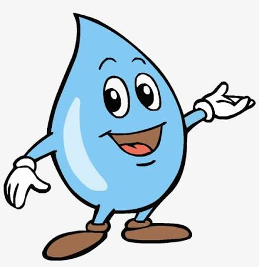

Un cuento sobre el ciclo del agua
Habia una vez una gota de agua llamada Gotita que vivia feliz en un rio de agua, H2O cristalino que corria entre montanias verdes y prados llenos de Flores. Cada maniana, el sol la saludaba con sus rayos dorados, y los peces jugaban a su alrededor.
-Hola, gotita! -decia el pez Nemo-. Listo para otro dia de aventuras?
-Claro! -respondio Gotita, rebosando suavemente sobre las olas-. Me encanta viajar con el rio
Pero un dia, algo magico paso. El sol brillo con mas fuerza que nunca, y Gotita sintio un cosquilleo en todo su cuerpo.
—Ay! —dijo—. Me siento mas ligera!
De pronto, empezo a elevarse lentamente, como si tuviera alas invisibles. Estaba evaporandose!
Y asi, Gotita subio y subio, hasta convertirse en una pequeña nube blanca en el cielo.
Para saber mas sobre el ciclo del agua, visita este enlace

Alla arriba, Gotita no estaba sola. Conocio a muchisimas otras gotas de agua que tambien habian subido desde rios, lagos y mares. Se tomaron todas de las manos y juntas formaron una nube grande y esponjosa, como de algodon. ¡Era muy divertido flotar juntas por el cielo, empujadas por el viento!
—Que linda es nuestra casa nueva! —decian riendo. A esto, una gota mas sabia le explico que se llama condensacion.
La nube se hizo más y mas grande a medida que llegaban mas y mas amigas gotas.
Un dia, la nube se lleno tanto de gotas que ya no podia contenerlas. Gotita y sus amigas comenzaron a caer lentamente hacia la Tierra.
Las pequeñas gotas comenzaron a caer desde las nubes.
La nube decidio que era hora de volver a la Tierra.
Gotita queria quedarse para siempre en el cielo.
Gotita estaba emocionada por regresar a la Tierra.
Y comenzo la lluvia! Gotita cayo suavemente sobre una hoja verde y luego se deslizo hasta llegar nuevamente a un pequeño rio.
—¡Qué aventura tan maravillosa! —dijo Gotita.
Asi, Gotita comprendio que el agua nunca deja de viajar. Puede estar en un rio, convertirse en vapor, formar nubes y regresar nuevamente a la Tierra en forma de lluvia.
Fin